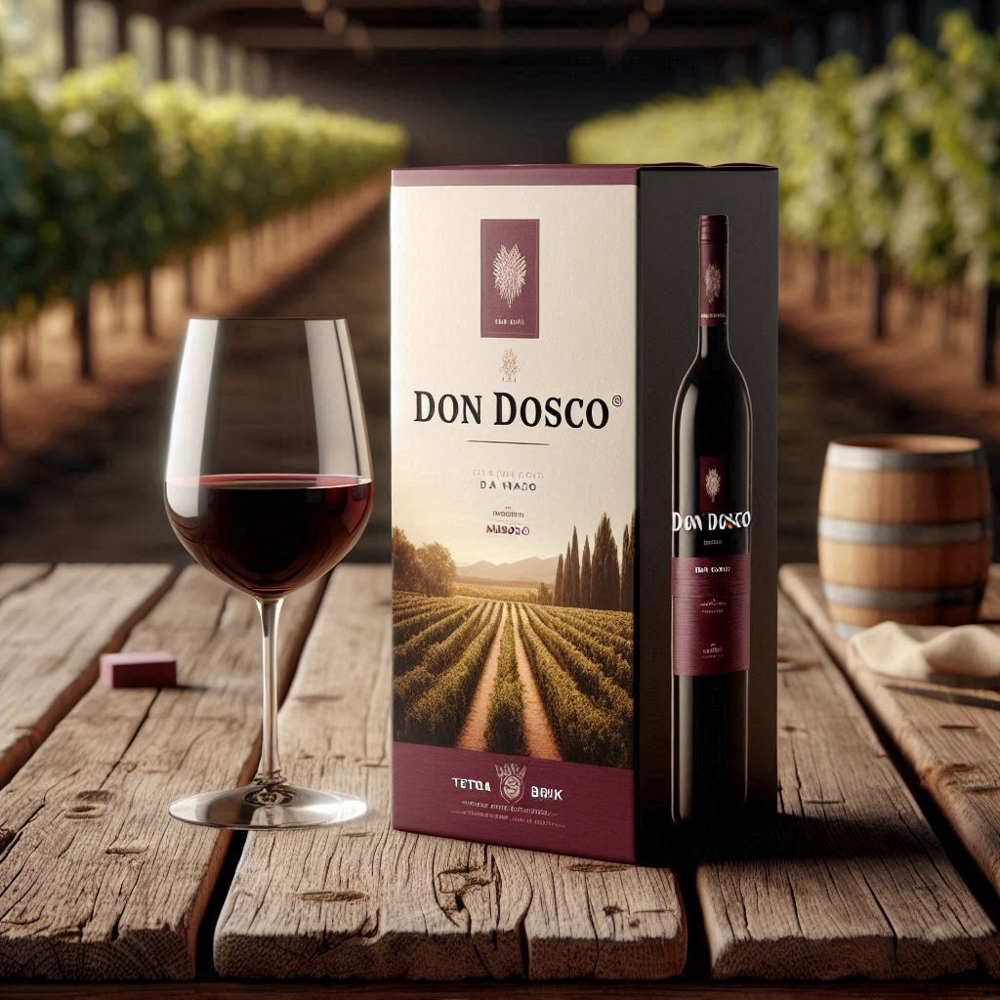

Nuestros Vinos

Vino Tinto Don Dosco
Un vino tinto de sabor intenso y aromas frutales.

Vino Tinto Reserva
Un vino de alta gama con notas de roble y frutos rojos.
Vino Tinto Gran Reserva
Un vino exclusivo, ideal para ocasiones especiales.